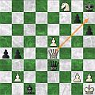

Algunos entusiastas —aquellos de la difunta «Parte de guerra» entre otros— han
armado esta Biblioteca Kierkegaard Argentina.
Además de conferencias, seminarios y esas cosas, han hecho traducciones, y algunas están disponibles en el sitio.
En particular «Cómo juzga Cristo el cristianismo oficial«, un texto vitriólico que ya habían publicado en esa revista; es bueno que esté online.
Archivo por meses: diciembre 2006
El dolor de Job
Datos a conciliar: los sufrimientos de Job por un lado, la justicia de Dios por el otro. Sobre este problema, parece, discurren Job y los amigos. Menos aparente es la diferencia: cuál es el punto fundamental que los separa, y por qué son más agradables a Dios los dichos de Job que los de sus amigos.
De lo mucho que se ha dicho, una de las observaciones más exitosas en estos tiempos es la del judío Martin Buber: la diferencia, dice él (digo yo, de memoria y de segunda mano) es que, puestos frente al problema, los amigos de Job hablan de Dios, mientras que Job habla a Dios.
No está mal; aunque desconfío de claves tan demasiadamente claras y satisfactorias, no está mal. Y podríamos seguir, por acá, o por otros caminos. Pero, para lo que acá queremos tratar, me quedo con otra diferencia, también de perspectiva, pero demasiado trivial para merecer nota en cualquier lugar que no sea este blog (y encima irrelevante para juzgar a los protagonistas, puesto que es una diferencia inevitable, impuesta por la situación en que se encuentran).
Job habla de (habla por) los dolores de Job. Los amigos … hablan de (hablan por) los dolores de Job. En un sentido, hablan de (hablan por) lo mismo, y la cuestión o aporía para ambos es la misma; pero en otro sentido, es enteramente otra cosa. Uno está plantado ante el dolor propio, los otros ante el dolor ajeno.
Y sería demasiado arbitrario (aun en este blog) sacar una moraleja de esto, pero dejo constancia del hecho, como aporte a lo que seguirá. Si Dios quiere.
De lo mucho que se ha dicho, una de las observaciones más exitosas en estos tiempos es la del judío Martin Buber: la diferencia, dice él (digo yo, de memoria y de segunda mano) es que, puestos frente al problema, los amigos de Job hablan de Dios, mientras que Job habla a Dios.
No está mal; aunque desconfío de claves tan demasiadamente claras y satisfactorias, no está mal. Y podríamos seguir, por acá, o por otros caminos. Pero, para lo que acá queremos tratar, me quedo con otra diferencia, también de perspectiva, pero demasiado trivial para merecer nota en cualquier lugar que no sea este blog (y encima irrelevante para juzgar a los protagonistas, puesto que es una diferencia inevitable, impuesta por la situación en que se encuentran).
Job habla de (habla por) los dolores de Job. Los amigos … hablan de (hablan por) los dolores de Job. En un sentido, hablan de (hablan por) lo mismo, y la cuestión o aporía para ambos es la misma; pero en otro sentido, es enteramente otra cosa. Uno está plantado ante el dolor propio, los otros ante el dolor ajeno.
Y sería demasiado arbitrario (aun en este blog) sacar una moraleja de esto, pero dejo constancia del hecho, como aporte a lo que seguirá. Si Dios quiere.
37 países
Comentario recibido, textual y completo:
Luego de 57 años de vida, y tras haber recorrido 37 países, sigo asombrándome de como hay gente que canaliza sus debilidades y complejos encubriéndose en nombre de algo que han dado en llamar dios… la inquisición y la cacería de brujas de Massachussets fueron muestras fieles de estos miedos e inseguridades. Por suerte, el mundo esta cambiando, y estas ideas ya no son tan contagiosas como en aquellas épocas.
Y bueno, al menos me reconcilia un poco con mi inveterado (¿se dice así, Jeeves?) sedentarismo. Que tenga un buen próximo viaje, maestro; saque muchas fotos, canalice lo que ud. tenga por donde ud. pueda, tenga paciencia con los pobres provincianos acomplejados, y no deje de cuidarse de los contagios, que nunca se sabe.
Si Dios quiere
Leído hoy.
De paso, unos datos —no sé cuán autorizados—sobre el origen de la palabra ojalá.
… Para describir así el futuro, Daniel-Rops usa verbos en futuro como lo haría cualquier marxista. Un musulmán podría enseñarle que es imprudente usar verbos en futuro sin agregar inch’Allah: «Si Dios quiere».
La cita es muy marginal a su contexto, pero me hizo gracia. Quizás por inesperada y variopinta. Características acentuadas por provenir de quien provienen: nuestra Simone Weil.De paso, unos datos —no sé cuán autorizados—sobre el origen de la palabra ojalá.
Job y los palabreros
Apenas ya respira en mí el aliento,
mis días acortó mi desventura,
la huesa sola es ya mi bien y asiento.
Y fuera menos grave esto que dura,
si de estos palabreros la torpeza
no me bañara l’alma de amargura…
(Job – Cap. 17 – Versión libre de Fray Luis de León)
Si de sufrimiento hablamos, Job siempre tendrá algo que decir, cómo no.mis días acortó mi desventura,
la huesa sola es ya mi bien y asiento.
Y fuera menos grave esto que dura,
si de estos palabreros la torpeza
no me bañara l’alma de amargura…
(Job – Cap. 17 – Versión libre de Fray Luis de León)
Se sabe que el libro de Job no es de los más sencillos de la Biblia. Los resúmenes o versiones condensadas cuentan que trata de un hombre bueno que fue probado por Dios con un montón de desgracias, y tentado así a renegar de El (si no de su existencia, al menos de su justicia y su bondad). Pero -dicen- Job aguantó sin murmurar, y (perdón si revelo el final feliz) Dios al final le dio por aprobada la prueba, le restituyó los bienes perdidos, y lo puso así como ejemplo a la posteridad de paciencia, mansedumbre y fe.
Si condensamos un poco menos, la historia empieza a complicarse: resulta, primero, que la prueba no fue iniciativa de Dios sino sugerencia de Satanás; y aparecen también tres amigos que se acercan a consolar a Job, sin mucho éxito… no queda muy claro por qué.
Y cuando vamos al texto, encontramos que el grueso está dedicado a estas discusiones de Job con sus amigos (la historia que nos resume la edición condensada es sólo la cáscara, una página del comienzo y otra del final), discusiones abigarradas y algo fatigosas y confusas, no nos queda muy claro para qué lado tira cada cuál, y si Job tiene o no razón, y por qué; encontramos además que, contrariamente a la imagen mansa y paciente de esos resúmenes dudosos, Job se queja, y mucho. Y tampoco al final, cuando Dios mismo mete baza, queda muy clara la moraleja… si la hay. A pesar de esta oscuridad -quizás tan aparente como la claridad de la versión condensada-, y por misteriosos modos, el libro de Job habla, abona y consuela. Hoy como ayer. Tipos tan variados como Kierkegaard, Simone Weil (notoria antipatizante del Antiguo Testamento) se encuentran entre sus devotos; Chesterton escribió un lindo y tal vez iluminador prólogo; Tolkien participó en su traducción. Y, entre nosotros, Fray Luis de León, intentó una traducción con explicación detallada, y hasta una versión libre, en verso español del siglo de oro. De esa versión (que no encuentro online), provienen los versos copiados arriba, y los que abajo siguen.
Se ven en ellos demarcados (según la interpretación de Fray Luis, al menos) los bandos: de un lado Job, que se queja y reclama a gritos hablar con Dios, casi como el cliente disconforme de un negocio que pide hablar con el gerente; del otro lado, los amigos que intentan calmarlo recordando que Dios es justo, que «algo habrá hecho» Job para merecer eso. Job no blasfema, no deja de reconocer la justicia de Dios, pero igual se queja, igual reclama hablar con Dios, mientras grita su desprecio por estos malos amigos que no saben consolar: los abogados defensores de Dios.
… Seguir leyendo
Esperando llegar
Por más que uno no pueda esperar más que llegar atrasado.
Mucho atrás de los pastores, incluso atrás de los magos.
Atrasado, cansado y mal entrazado.
Igual, esperamos llegar, y que nos hagan un lugarcito. Y estaremos contentos, cómo no.
Feliz Navidad.
La aporía del mal, y una contra-aporía
Veníamos preludiando, en algunas entradas pasadas, el tema. Seguimos calentando los dedos (no pretenderemos pasar de eso), con una brevisíma y obvia contra-aporía.
Vamos primero a la aporía: existe el mal, la gente sufre; y sin embargo, se supone que Dios es todopoderoso y bueno; sabe lo que nos pasa, y nos quiere. ¿Y entonces? ¿Eh…?
Del lado ateo (o agnóstico; para el caso es igual; y para casi todos los casos), más que aporía es una objeción prácticamente decisiva. Si no una demostración de la inexistencia de Dios, sí por de pronto del absurdo del concepto «clásico» (cristiano, para empezar) de Dios; un hecho palmario que basta para —razonablemente— apostar.
Del lado creyente, la defensa que intenta la apologética me parece por lo general bastante melancólica; más cerca de los amigos de Job que de Job, pareciera. Y casi pareciera que meterse a «defender a Dios» lleva necesariamente al ridículo y tal vez a la mentira. Pero ya nos meteremos en este aspecto; por ahora, sólo lo digo para que no se crea que estas cuestiones las traigo para atacar a la aporía y así defender a Dios (o a la Iglesia o al cristianismo, lo mismo da); para nada. Es sólo para sacudirme la modorra y ayudarme a pensar, a entenderme mejor a mí y también a los ateos.
Primera aporía-de-la-aporía. Usted -ateo-, me dice: «Yo no puedo tener certezas sobre la naturaleza y la existencia de Dios. Lo que si puedo, y debo es ver el mal en el mundo, notar que la gente sufre, y sufre demasiado. Constatar eso, y entender (como creo entenderlo) el concepto que tienen los cristianos de un Dios providente, omnipotente y bondadoso, me basta para descreer de su realidad; y creo que debería bastar a cualquiera con los ojos y el corazón en su lugar».
Esto suena consistente. Me suena razonable, puedo perfectamente simpatizar (como simpatizo con Iván Karamazov). Por eso mismo me choca que la objeción sea tan objetable, que su consistencia parezca caer al primer golpe. Por ejemplo: la contraobjeción de la relatividad del sufrimiento. Porque ¿qué regla está usando el escéptico para medir el sufrimiento humano? ¿Cómo puede decir que «la gente sufre demasiado»? ¿Cuál sería el grado de felicidad (o no-sufrimiento) que podría, hipotéticamente, llevarlo a considerar la realidad de Dios?
Sí, ya veo: ahí veo (y sin calma, le garanto) un millón de mujeres violadas y prostituidas, allá veo esos niños muertos de hambre, veo esos enfermos, esos desocupados, oprimidos, explotados y humillados. Si Dios metiera mano para eliminar ese sufrimiento… entonces podríamos hablar, me dice el escéptico. Bien, ponéle que lo hace. Hace eso, y más; y después se vuelve a su cielo. Echamos entonces una nueva mirada al mundo, y ahora vemos… un adolescente que perdió el teléfono celular, una mujer que descubre el vigésimo defecto irritante de su esposo, un hombre que no consiguió entradas para el Boca-River, una chica que no consigue novio, un viejo aburrido haciendo zapping, un novelista que no logra escribir la novela que lo haría famoso, un muchacho que se angustia ante el examen de matemática; y, finalmente, (acaso el ejemplo clave) un niño que llora a moco tendido porque los padres no le compraron el juguete que vio en la TV, etc. Y sufren, cómo no; sufren mucho. ¿Qué diremos entonces? ¿Pediremos una nueva intervención divina? ¿Hasta cuándo? Y si no la pedimos, si nos damos por conformes… ¿con qué criterio y con qué derecho podemos despreciar el sufrimiento del niño antes mencionado, y afirmar que eso no contradice la existencia de un Dios bueno y poderoso?
¿Es una simple cuestión de grados, con un umbral de felicidad-sufrimiento que los hombres podemos razonablemente ubicar ?
¿No muestra esto mismo que hay un emorme malentendido de fondo en la objeción inicial… como también en las defensas? ¿No será que tenemos —nosotros, modernos civilizados desmitificados— una concepción infinitamente pueril («antropomórfica» sería poco decir) de lo que es Dios, el hombre, su relación y su distancia? ¿Y del sufrimiento y la felicidad?
Esta, como les digo, es sólo una primera contra-aporía. Hay otras. Pero esta me parece la más evidente, y, repito, su misma evidencia me sorprende y me incomoda. Porque (repito!) esto no intenta refutar la objeción, no quiero refutarla, no creo que pueda ser refutada (al menos así), incluso la creo válida en un plano (ya volveremos a Job); y hasta si me apuran, necesaria, para no formarse una idea falsa de Dios y terminar adorando a un ídolo. Pero, por lo mismo, la objeción debe necesitar purificación, para que no pretenda ubicarse en los asientos que no le corresponden.
Mientras tanto, me quedo rumiándolo; y bien sé que este es un tema muy trillado, y que muy probablemente estaré cometiendo alguna ingenuidad pareja a la del escéptico; pero nunca dejaremos que esa consideración nos paralice, ya saben.
En tres ruedas
Casualmente, paveando por Youtube, encontré en un video
el mentado autito exótico de Miyazaki, con el mismísimo maestro al volante.
Se comprende la fascinación del chico aquel.
Ya que estamos en youtube, algunos otros videos (AMVs, que les llaman; especie de video-clips con músicas que nada que ver; hay que estar un poco enfermo para que no te disgusten esos travestismos, pero la verdad es que hay algunos que ponen bastante trabajo y buen gusto en la cosa; y además, estoy algo enfermo, cómo no).
Se comprende la fascinación del chico aquel.
Ya que estamos en youtube, algunos otros videos (AMVs, que les llaman; especie de video-clips con músicas que nada que ver; hay que estar un poco enfermo para que no te disgusten esos travestismos, pero la verdad es que hay algunos que ponen bastante trabajo y buen gusto en la cosa; y además, estoy algo enfermo, cómo no).
Nos seguimos poniendo tecnos
Limpieza general en el sitio web (aunque a simple vista no se note demasiado;
mayormente, mugre bajo las alfombras, con bichos -bugs- varios incluidos). Para el improbable lector geek que ande en estas cosas (para mí, sobre todo), anoto un par de herramientas que me han sido muy útiles:
Checkbot: un scripcito perl para recorrer links de un sitio y detectar links rotos. Humilde pero cumplidor.
WinSCp. Pensaba que era una mera versión Windows del SCP (secure copy), pero es mucho más; interfaz tipo Total Commander (otro clásico ya), con muy buen soporte para sincronizar sitios remotos vía SSH. De primera.
No tengo todavía un editor HTML que me termine de convencer… estos días estoy usando el HTML-Kit.
Estuve probando, además, ese detalle fashion del preview vía Snap.com. Desconfío un poco de esas cosas, pero esto parece estar bien pensado. Los que no sepan de qué se trata, pueden verlo en acción en mi página inicial o la de enlaces sobre Ghibli; el efecto se ve al dejar quieto el mouse sobre algunos links.
Checkbot: un scripcito perl para recorrer links de un sitio y detectar links rotos. Humilde pero cumplidor.
WinSCp. Pensaba que era una mera versión Windows del SCP (secure copy), pero es mucho más; interfaz tipo Total Commander (otro clásico ya), con muy buen soporte para sincronizar sitios remotos vía SSH. De primera.
No tengo todavía un editor HTML que me termine de convencer… estos días estoy usando el HTML-Kit.
Estuve probando, además, ese detalle fashion del preview vía Snap.com. Desconfío un poco de esas cosas, pero esto parece estar bien pensado. Los que no sepan de qué se trata, pueden verlo en acción en mi página inicial o la de enlaces sobre Ghibli; el efecto se ve al dejar quieto el mouse sobre algunos links.
Radio Numenor
No he logrado todavía engancharme (o enviciarme?)
con podcasts o radios en Internet.
Pero no debo dejar de mencionar la existencia de Radio Numenor.
La dirección era esta,
pero se estarían pasando a estotra.
Está hecha por varios tolkienianos, algunos de ellos amigos míos, de la vieja lista de correos Tolkien. Aquellos tiempos en que uno tenía tiempo… o, quién sabe, acaso sabía usarlo mejor.
Está hecha por varios tolkienianos, algunos de ellos amigos míos, de la vieja lista de correos Tolkien. Aquellos tiempos en que uno tenía tiempo… o, quién sabe, acaso sabía usarlo mejor.
Personalismos vs focus-groups
Si una película de… no sé, pongamos por ejemplo… Miyazaki
es más personalista que la producción promedio
de Disney (en la que las decisiones son tomadas por grupos
de creativos), habrá (por ley estadística) otras que son menos personalistas que el promedio.
Y en verdad, viendo por donde marchan los tiempos, extraña que éstas
no sean más abundantes, y que con todas las computadoras, psicología de masas y técnicas de marketing que tenemos, aún no hayamos logrado mecanizar (o «democratizar», si quieren) la creación artística.
Se me ocurren dos ejemplos.
Shark tale («Es espantatiburones«), 2004, es una animación studio-financed, machine-pressed que…
Yo no vi ninguna de las dos. Pero, según creo, ninguna fue un éxito; ni desde el punto de vista artístico ni desde el comercial. Pobre acogida de la crítica y del público.
Un par de pequeñas buenas noticias, me parece a mí.
Se me ocurren dos ejemplos.
Shark tale («Es espantatiburones«), 2004, es una animación studio-financed, machine-pressed que…
…tiene en sus créditos varios directores y guionistas. Pero los
verdaderos y anónimos arquitectos son un montón de niños:
cada chiste, cada personaje, cada acompañamiento musical
y cada referencia a la cultura popular ha tenido su test
de mercado, por medio de proyecciones previas, «focus groups», y referencias a éxitos de taquilla.
Más reciente, «Snakes on the plane» fue hecha con la supervisión y aportes creativos -vía Internet-
de un montón de geeks entusiastas, presuntos representantes del público apuntado (el target).
Anota un crítico:
… una película de la gente, por la gente y para la gente.
O al menos eso es lo que pretende la productora New Line.
Y una vez que los web-geeks escuharon ese título irresistible,
empezaron a crear su propios posters y diálogos, y enviaron sus
ideas. Los de New Line, presintiendo la mina de oro, prestaron oídos y obedecieron.
(Tal vez podría haber traducido «people» por «pueblo», pero no quise forzar la cosa).Yo no vi ninguna de las dos. Pero, según creo, ninguna fue un éxito; ni desde el punto de vista artístico ni desde el comercial. Pobre acogida de la crítica y del público.
Un par de pequeñas buenas noticias, me parece a mí.
Los buenos versos
Tras una charla introductoria al anime y al manga, el tal Dr. Hairston advierte algo parecido a lo que yo advertí una vez: que uno sea aficionado entusiasta de un determinado género artístico (por ejemplo, el anime), no se contradice en absoluto con el reconocimiento de que la mayoría de la producción de ese género es basura. Más bien al contrario: es el melómano, el que con más pasión y profundidad disfruta de la música, quien abomina con más energía de la mayoría de la música que se escucha por la radio. Quien más ama la (buena) música es quien más odia la (mala) música. Y, comenta el conferencista….
Ahora… ¿cómo es que un melómano puede declararse amante del género musical, cuando al mismo tiempo reconoce que la mayoría de la música es basura? ¿No correspondería sacar un promedio, y concluir entonces que la música -en promedio- no es gran cosa, y no cabe entusiasmarse por ella?
Parece que no. Parece que en estas cuestiones artísticas los promedios son impertinentes, y que el género se salva y se justifica por sus cumbres. Pesamos el oro, la ganga no cuenta
No sólo un género, pienso ahora: también la obra de un autor. «Al poeta, juzgarlo por sus buenos versos», dicen.
Y me pregunto qué es lo que tendrá el arte, que le ha ganado este privilegio de eximirse de pesar bienes y males en la balanza. Si es que en verdad es un privilegio tan exclusivo, si no debería aplicarse el mismo criterio al juzgar la obra de un hombre, la obra de una cultura, una idea, una religión… ( Ehmmm… espero que no haya ningún apologeta cerca… si es así, yo no dije nada).
… el manga y el anime siguen la ley de Sturgeon, como cualquier hijo de vecino. ¿No conocen la ley de Sturgeon? Se cuenta que una vez preguntaron al escritor de ciencia ficción Theodore Sturgeon qué opinaba de la calidad de la ciencia ficción actual. Respondió que el 90% de lo que se ve es basura; pero que, por otro lado, el 90% de cualquier cosa es basura.
Basta con pensar en las películas, música, televisión, artes plásticas,
novelas….
Creo que no cabe mucha discusión (aunque, como sigue comentando, cuando se trata de decidir cuál es el 10% restante, es otra cuestión; pero no nos metamos en eso). Ahora… ¿cómo es que un melómano puede declararse amante del género musical, cuando al mismo tiempo reconoce que la mayoría de la música es basura? ¿No correspondería sacar un promedio, y concluir entonces que la música -en promedio- no es gran cosa, y no cabe entusiasmarse por ella?
Parece que no. Parece que en estas cuestiones artísticas los promedios son impertinentes, y que el género se salva y se justifica por sus cumbres. Pesamos el oro, la ganga no cuenta
No sólo un género, pienso ahora: también la obra de un autor. «Al poeta, juzgarlo por sus buenos versos», dicen.
Y me pregunto qué es lo que tendrá el arte, que le ha ganado este privilegio de eximirse de pesar bienes y males en la balanza. Si es que en verdad es un privilegio tan exclusivo, si no debería aplicarse el mismo criterio al juzgar la obra de un hombre, la obra de una cultura, una idea, una religión… ( Ehmmm… espero que no haya ningún apologeta cerca… si es así, yo no dije nada).
España
La palabra «hispanidad» —o su adjetivo, «hispánico«— es de esas
que despiertan un entusiasmo automático en ciertos sectores… de esas palabras cuasi sacras, que pretenden decir mucho;
palabras que portan una carga pasional, militante, ideológica;
palabras que se usan -de puertas adentro y de puertas afuera- como bandera, arma, toque de clarín.
La verdad es que a mí me fastidian esas palabras (o mejor dicho, ese uso de esas palabras), y cada vez más.
En otras veredas, tienen otras palabras, cómo no; por ejemplo, para citar veredas más transitadas: «Latinomérica»; o «comunidad»… y muchas otras, que no me fastidian menos, y que acaso valga la pena visitar más por extenso otro día; al modo de una «exégesis de lugares comunes»… Pero hoy, visitando algunos blogs españoles (católicos, en general), pensaba sobre todo en España, y en aquella palabra… acaso más usada (al menos en ese modo) de este lado del Atlántico que de aquel.
Caí, por rara vez, a leer varias cositas que me resultaron alentadoras; y se me ocurrió —con la arbitrariedad habitual— que lo que tiene hoy España de bueno y verdadero (y de verdaderamente español) no tiene mucho que ver con las coloridas y sonoras imágenes que suele evocar la palabrita «hispanidad».
Y, quizás como un eco de aquello de Dostoyevsky (si es que es de Dostoyevsky) de que «si algo salvará al mundo, será la belleza», a mi se me cruzó esta arbitraria trivialidad: si algo salvará a España, será el español. La lengua, quiero decir. Y referido a una salvación «ad intra»; me importa un comino, en este aspecto, el crecimiento demográfico del idioma y esas cuestiones.
Naturalmente, más de un hispanófilo criollo querrá enmendarme la plana: si algo salvará a España, será el catolicismo, me dirán.
Vaya usted a saber. Yo me quedo con lo otro. Y con la humilde sugerencia de no pretender subir escaleras sin pasar por los peldaños intermedios. No apresurarse demasiado, digo… como no hay que apresurase en enmendarle la plana a Dostoyevsky («si algo salvará al mundo, será la religión… o Dios»). Tate, tate, folloncicos….
La verdad es que a mí me fastidian esas palabras (o mejor dicho, ese uso de esas palabras), y cada vez más.
En otras veredas, tienen otras palabras, cómo no; por ejemplo, para citar veredas más transitadas: «Latinomérica»; o «comunidad»… y muchas otras, que no me fastidian menos, y que acaso valga la pena visitar más por extenso otro día; al modo de una «exégesis de lugares comunes»… Pero hoy, visitando algunos blogs españoles (católicos, en general), pensaba sobre todo en España, y en aquella palabra… acaso más usada (al menos en ese modo) de este lado del Atlántico que de aquel.
Caí, por rara vez, a leer varias cositas que me resultaron alentadoras; y se me ocurrió —con la arbitrariedad habitual— que lo que tiene hoy España de bueno y verdadero (y de verdaderamente español) no tiene mucho que ver con las coloridas y sonoras imágenes que suele evocar la palabrita «hispanidad».
Y, quizás como un eco de aquello de Dostoyevsky (si es que es de Dostoyevsky) de que «si algo salvará al mundo, será la belleza», a mi se me cruzó esta arbitraria trivialidad: si algo salvará a España, será el español. La lengua, quiero decir. Y referido a una salvación «ad intra»; me importa un comino, en este aspecto, el crecimiento demográfico del idioma y esas cuestiones.
Naturalmente, más de un hispanófilo criollo querrá enmendarme la plana: si algo salvará a España, será el catolicismo, me dirán.
Vaya usted a saber. Yo me quedo con lo otro. Y con la humilde sugerencia de no pretender subir escaleras sin pasar por los peldaños intermedios. No apresurarse demasiado, digo… como no hay que apresurase en enmendarle la plana a Dostoyevsky («si algo salvará al mundo, será la religión… o Dios»). Tate, tate, folloncicos….
El mal de afuera
Dios permite que el mal exista. Nosotros debemos hacer lo mismo con el mal que no tenemos posibilidad de destruir. Debemos permitir que el mal exista fuera de nosotros. Pero solamente fuera de nosotros. Es decir, fuera de nuestro poder.
Simone Weil (Cuadernos de América – 1942)
Tantas cuestiones…
¿«Permitir que exista» es aquí equivalente a «aceptar»? Yo creería que sí. Aceptación como opuesto de escándalo o rebelión.
De otra manera, sería casi una trivialidad, puesto que se trata de un mal que no tenemos posibilidad de eliminar.
Pero, dirá alguro: prefiero creer que no hay un mal que yo no tenga posibilidad de destruir, prefiero no permitir (aceptar) absolutamente ningún mal. No por soberbia, sino para mantenerme despierto, para no perder la sensibilidad y la caridad. Y cuanto menos me toque ese mal, más me negaré a aceptarlo. Después de todo, eso es el hambre de justicia, objeto de una de las bienaventuranzas ¿no es verdad?
Pues, yo no estoy seguro; pero me parece que no.
Ma finíshela con Miyazaki!
Tres más (y joderemos más); para desesperación
de algunas personas que me quieren bien.
Reviví esta semana aquella sensación juvenil, de fijarme por dónde voy para gozarme de que falte mucho. Pero esta vez -ahí tienen- no se trató de una película de Miyazaki. Se trató de un manga (un comic), largo, algo más de mil páginas, que un amigo tuvo la gentileza de traerme desde Barcelona el domingo pasado. De Miyazaki, miren qué casualidad. Lamentablemente, ya me falta poco.
Una rareza que encontré buscando otra cosa. Una especie de viñeta infantil, dibujos con un texto poético bajo la forma de carta de un niño a su hermana. La traducción (poesía-o-algo-así… y con escala intermedia en el inglés) es seguramente algo infiel y arbitraria. Pero igual se me dio la gana de subirla. Y acá está. No estoy seguro de por qué logra emocionarme. Tal vez alguna lectura simbólica —de la parálisis, para empezar—; o acaso es que es de Miyazaki, nomás.
Estoy armando la prometida «página Ghibli». En la infancia todavía, y aprendiendo a caminar, pero pueden ir viendo. Acá.
Reviví esta semana aquella sensación juvenil, de fijarme por dónde voy para gozarme de que falte mucho. Pero esta vez -ahí tienen- no se trató de una película de Miyazaki. Se trató de un manga (un comic), largo, algo más de mil páginas, que un amigo tuvo la gentileza de traerme desde Barcelona el domingo pasado. De Miyazaki, miren qué casualidad. Lamentablemente, ya me falta poco.
Una rareza que encontré buscando otra cosa. Una especie de viñeta infantil, dibujos con un texto poético bajo la forma de carta de un niño a su hermana. La traducción (poesía-o-algo-así… y con escala intermedia en el inglés) es seguramente algo infiel y arbitraria. Pero igual se me dio la gana de subirla. Y acá está. No estoy seguro de por qué logra emocionarme. Tal vez alguna lectura simbólica —de la parálisis, para empezar—; o acaso es que es de Miyazaki, nomás.
Estoy armando la prometida «página Ghibli». En la infancia todavía, y aprendiendo a caminar, pero pueden ir viendo. Acá.
Oyendo palabras viejas
No es ninguna novedad, y creo que ya lo dijimos alguna vez.
La extrañeza de toparse con una frase vieja, que de golpe te habla; palabras simples, llanas, que, sin embargo, hasta ayer uno había leído
y repetido sin llegar a conocer. O que había conocido en abstracto; tal vez Simone Weil hablaría de un conocimiento imaginado (en el sentido en que toda imaginación aparta de lo real). No quisiera mentar la oposición de «conocer con el corazón» vs. «conocer con la cabeza», no me parece que se trate de eso; creo que el contacto que se da, la intimidad del entender («conocer» en la acepción bíblica, acaso), pasa por la cabeza, tanto o más que por el corazón.
A mí me pasó, una vez más, el viernes, en la fiesta de la Inmaculada, cuando en la misa repitieron aquella consagración, cuando oí aquello de consagrar «en este día mis ojos, mis oídos, mi lengua, mi corazón«, con impresión nueva, como si nunca lo hubiera oído antes.
¿Necesidad de experiencias personales para que lo que expresan las palabras puedan arraigar? No sé. Lo dudo. Necesidad para algunos embotados, tal vez. Antes de eso irá la necesidad de prestar atención (pero «con toda el alma», nunca mejor dicho). Y tomar conciencia, una vez más, de la precariedad de las palabras, de toda comunicación entre estos pobres hombres caídos. Tentación de desaliento y cerrazón para con el prójimo, podrá ser; pero también motivo de respeto, compasión y paciencia ante los desencuentros y los malentendidos.
A mí me pasó, una vez más, el viernes, en la fiesta de la Inmaculada, cuando en la misa repitieron aquella consagración, cuando oí aquello de consagrar «en este día mis ojos, mis oídos, mi lengua, mi corazón«, con impresión nueva, como si nunca lo hubiera oído antes.
¿Necesidad de experiencias personales para que lo que expresan las palabras puedan arraigar? No sé. Lo dudo. Necesidad para algunos embotados, tal vez. Antes de eso irá la necesidad de prestar atención (pero «con toda el alma», nunca mejor dicho). Y tomar conciencia, una vez más, de la precariedad de las palabras, de toda comunicación entre estos pobres hombres caídos. Tentación de desaliento y cerrazón para con el prójimo, podrá ser; pero también motivo de respeto, compasión y paciencia ante los desencuentros y los malentendidos.
Cosas importantes
De una entrevista a Miyazaki, en 1993:
—… pero, aunque es cierto que tengo mi lado cínico, por lo común soy alegre y entusiasta. No querría dejar la impresión de que paso las noches despierto cuestionándome mis talentos, o preguntándome si llegó mi tiempo de jubilarme… Pero he estado tan ocupado, toda mi vida, hay tantas cosas que querría hacer y que no he tenido tiempo. Si en verdad me retiro de la animación, querría dedicar mi tiempo a cosas más importantes.
— ¿Como por ejemplo…?
— Hacer una película significa dedicarse a entretener un montón de gente. Esas cosas no son cuantificables. Quiero decir que entretener a muchas personas no es mejor ni peor que entrener y hacer feliz a una sola persona. Por ejemplo -esto sucedió pocos días atrás- yo uso aquel auto rojo de tres ruedas para ir al trabajo. Estaba estacionando, y un niño de unos cinco años que pasaba con su madre se detuvo y se quedó mirando con la boca abierta. Estaba fascinado, los ojos se le salían de las órbitas. Su madre lo llamaba, pero él no se movía. Después se acercó, lentamente, y extendió su mano como para tocarlo. Mi auto es un modelo artesanal inglés, con ese motor italiano descubierto en el frente; me preocupó que el niño pudiera quemarse, y le dije no sé qué …. «No toques, quema», algo así, sin pensar. El niño entonces se dio vuelta y se fue con su madre. Más tarde empecé a lamentarlo. Es verdad que yo estaba apurado, pero de todos podría haber inivitado al niño y a su madre a dar una vuelta en el auto. Podría haberle dado a ese niño una experiencia fantástica, de esas que una mente infantil no olvida. Cuando hablo de dedicar mi tiempo a cosas más importantes, me refiero a eso. Una experiencia personal de ese tipo es más significativa que cualquier película. Y si uno presume de saber entretener a la gente, bueno, ahí debería haberlo mostrado. Quizás la próxima vez, quizás con otro niño, me gustaría poder hacerlo.
— ¿Como por ejemplo…?
— Hacer una película significa dedicarse a entretener un montón de gente. Esas cosas no son cuantificables. Quiero decir que entretener a muchas personas no es mejor ni peor que entrener y hacer feliz a una sola persona. Por ejemplo -esto sucedió pocos días atrás- yo uso aquel auto rojo de tres ruedas para ir al trabajo. Estaba estacionando, y un niño de unos cinco años que pasaba con su madre se detuvo y se quedó mirando con la boca abierta. Estaba fascinado, los ojos se le salían de las órbitas. Su madre lo llamaba, pero él no se movía. Después se acercó, lentamente, y extendió su mano como para tocarlo. Mi auto es un modelo artesanal inglés, con ese motor italiano descubierto en el frente; me preocupó que el niño pudiera quemarse, y le dije no sé qué …. «No toques, quema», algo así, sin pensar. El niño entonces se dio vuelta y se fue con su madre. Más tarde empecé a lamentarlo. Es verdad que yo estaba apurado, pero de todos podría haber inivitado al niño y a su madre a dar una vuelta en el auto. Podría haberle dado a ese niño una experiencia fantástica, de esas que una mente infantil no olvida. Cuando hablo de dedicar mi tiempo a cosas más importantes, me refiero a eso. Una experiencia personal de ese tipo es más significativa que cualquier película. Y si uno presume de saber entretener a la gente, bueno, ahí debería haberlo mostrado. Quizás la próxima vez, quizás con otro niño, me gustaría poder hacerlo.
Diálogos de novela
De «El poder y la gloria», de Graham Greene, cerca del final; el teniente acaba de apresar al cura (México, durante la persecución religiosa)
y poco antes de su ejecución, dialogan un rato.
Me llama la atención, de todas maneras, que en los dos casos la voz cantante del diálogo, el que se impone… sea la del que se rebela contra el cristianismo. Signo de atracción por el abogado del diablo, supongo (mientras sólo sea por el abogado…).
Y puesto que las dos en el fondo tratan de la misma aporía (cómo es que Dios parece permitir el mal, por qué «no hace nada», y qué respuesta nos toca a nosotros), sirva esta entrada autobiográfica a modo de preludio a algunas anotaciones que vendrán sobre ese tema.
…
—Aborrezco sus razonamientos —dijo el teniente—. No quiero razonamientos. Si usted ve a alguien que sufre, razona y razona. Dice… tal vez el dolor sea conveniente, tal vez algún día tenga su recompensa. Yo, en cambio, dejo hablar al corazón.
—En la punta de un fusil.
—Sí. En la punta de un fusil.
—Oh, bueno, tal vez usted cuando tenga mi edad llegue a saber que el corazón es una bestia poco digna de confianza…
Es una novela bastante famosa,
no estoy seguro de que sea buena, ni siquiera estoy seguro de que me guste.
La leí joven (menos de 15 años, creo). Me quedaron grabadas
partes de ese diálogo, sobre todo esas líneas. Aun sin entender del todo,
sin estar seguro de quién tiene razón y quien no (en general y en particular),
me quedaron grabadas, como una melodía; y quizás (lo pienso ahora), fue eso (junto con
el cruce entre Iván y Alioscha
en Los Hermanos Karamazov)
lo que me empujó a buscar una especie de sabiduría … por la fácil y dudosa vía libresca-novelesca.
No es una queja, en todo caso, ni reclamo por promesa incumplida (no estoy
seguro de que haya existido una promesa; ni de que haya sido incumplida).—Aborrezco sus razonamientos —dijo el teniente—. No quiero razonamientos. Si usted ve a alguien que sufre, razona y razona. Dice… tal vez el dolor sea conveniente, tal vez algún día tenga su recompensa. Yo, en cambio, dejo hablar al corazón.
—En la punta de un fusil.
—Sí. En la punta de un fusil.
—Oh, bueno, tal vez usted cuando tenga mi edad llegue a saber que el corazón es una bestia poco digna de confianza…
Me llama la atención, de todas maneras, que en los dos casos la voz cantante del diálogo, el que se impone… sea la del que se rebela contra el cristianismo. Signo de atracción por el abogado del diablo, supongo (mientras sólo sea por el abogado…).
Y puesto que las dos en el fondo tratan de la misma aporía (cómo es que Dios parece permitir el mal, por qué «no hace nada», y qué respuesta nos toca a nosotros), sirva esta entrada autobiográfica a modo de preludio a algunas anotaciones que vendrán sobre ese tema.
Enardecimientos litúrgicos
Sí, probablemente «clamar» no sea
una traducción adecuada de «stewing»
Se trata -creo yo; o al menos así lo leí yo- de un «clamor litúrgico» no necesariamente exteriorizado. En argentino podríamos decir: «darse manija».
Una irritación que nos gusta malcriar, un enardecimiento que puede llegar a ocupar gran parte del territorio de nuestra religiosidad (palabrita espinosa si las hay). Y que, me parece, a pesar de todas las racionalizaciones y justificaciones en nombre de la piedad, en la mayoría de los casos es un escándalo más estético que religioso.
«Estético» en el mejor sentido de la palabra, si quieren; belleza que le es debida a Dios, (y aun, inmanentemente hablando, a los mismos adoradores), y recuérdenme aquello de Bloy, si quieren, de que el esplendor no es un lujo sino una necesidad; y recuérdenme mis propios berrinches litúrgicos (pasados y futuros)… Sí, pero cuidado con confundir los planos. Y pensar que debe haber un tiempo para irritarse contra los guitarristas miseros, y otro para menospreciar esa irritación. Y si hay un tiempo, habrá un lugar; que debe estar por allá, lejos, al fondo y a la derecha.
Estos días se está hablando de la posible autorización («indulto» según algunos, «liberación» según otros; que en cuestiones de chicanas retóricas los católicos no tenemos nada que envidiarles a nadie, no crean) para celebrar la misa según el ritual «tridentino». A mí esto me produciría algún entusiasmo, tal vez… si pudiera taparme la nariz para no sentir el tufo de los impulsadores; cuando caigo en lugares como este, creo entender mejor las razones de tantos obispos que -según pareciera- tienen miedo de «los tradicionalistas».
Y, amigo mío, si esto te parece un infantilismo de mi parte (la existencia de piantavotos no descalifica una causa), si esto te parece estúpido e inadmisible, te diré algo… más infantil, estúpido e inadmisible todavía.
Ponéle que a mí me gustaría tener la opción de misa a la antigua, y supongamos que sería no solo un placer sino un enorme provecho espiritual para mí (por hablar sólo de mí). Ponéle que el obispo X, sabedor de todo esto, decide no obstante desautorizarla porque tiene -y con buenos motivos- miedo de esos tradicionalistas energúmenos; porque considera que darles lugar es peligroso. A mí, en tal supuesto, no me costará darle la razón al obispo. Ahora… el domingo, al escuchar sufridamente, por enésima vez, los rasgueos chocarreros y profanos del entusiasta guitarrista parroquial (por no decir nada del cura «litúrgicamente creativo»)… trataré, claro, de ahogar mis puteadas interiores; pero, las que no pueda ahogar las apuntaré -no al guitarrista, no al párroco, no al obispo- sino a esos militantes de la tradición que me han condenado a tener que soportar a este guitarrista; y que, igual que los fariseos que no entraban ni dejaban entrar, nos han estorbado a todos, por su propia soberbia y su estulticia, el acceso a esa tradición que tanto dicen amar.
Y tras este pequeño desahogo infantil e inadmisible los dejo con tres posts de Amy Welborn (acaso el blog católico yanqui más popular, y con sus razones): sobre la música litúrgica, sobre la «misa tridentina» (de acuerdo, en general), y otro sobre la Iglesia en Francia en relación a esas movidas tradicionalistas (sólo para gente con tiempo: hay que leer los comentarios).
Se trata -creo yo; o al menos así lo leí yo- de un «clamor litúrgico» no necesariamente exteriorizado. En argentino podríamos decir: «darse manija».
Una irritación que nos gusta malcriar, un enardecimiento que puede llegar a ocupar gran parte del territorio de nuestra religiosidad (palabrita espinosa si las hay). Y que, me parece, a pesar de todas las racionalizaciones y justificaciones en nombre de la piedad, en la mayoría de los casos es un escándalo más estético que religioso.
«Estético» en el mejor sentido de la palabra, si quieren; belleza que le es debida a Dios, (y aun, inmanentemente hablando, a los mismos adoradores), y recuérdenme aquello de Bloy, si quieren, de que el esplendor no es un lujo sino una necesidad; y recuérdenme mis propios berrinches litúrgicos (pasados y futuros)… Sí, pero cuidado con confundir los planos. Y pensar que debe haber un tiempo para irritarse contra los guitarristas miseros, y otro para menospreciar esa irritación. Y si hay un tiempo, habrá un lugar; que debe estar por allá, lejos, al fondo y a la derecha.
Estos días se está hablando de la posible autorización («indulto» según algunos, «liberación» según otros; que en cuestiones de chicanas retóricas los católicos no tenemos nada que envidiarles a nadie, no crean) para celebrar la misa según el ritual «tridentino». A mí esto me produciría algún entusiasmo, tal vez… si pudiera taparme la nariz para no sentir el tufo de los impulsadores; cuando caigo en lugares como este, creo entender mejor las razones de tantos obispos que -según pareciera- tienen miedo de «los tradicionalistas».
Y, amigo mío, si esto te parece un infantilismo de mi parte (la existencia de piantavotos no descalifica una causa), si esto te parece estúpido e inadmisible, te diré algo… más infantil, estúpido e inadmisible todavía.
Ponéle que a mí me gustaría tener la opción de misa a la antigua, y supongamos que sería no solo un placer sino un enorme provecho espiritual para mí (por hablar sólo de mí). Ponéle que el obispo X, sabedor de todo esto, decide no obstante desautorizarla porque tiene -y con buenos motivos- miedo de esos tradicionalistas energúmenos; porque considera que darles lugar es peligroso. A mí, en tal supuesto, no me costará darle la razón al obispo. Ahora… el domingo, al escuchar sufridamente, por enésima vez, los rasgueos chocarreros y profanos del entusiasta guitarrista parroquial (por no decir nada del cura «litúrgicamente creativo»)… trataré, claro, de ahogar mis puteadas interiores; pero, las que no pueda ahogar las apuntaré -no al guitarrista, no al párroco, no al obispo- sino a esos militantes de la tradición que me han condenado a tener que soportar a este guitarrista; y que, igual que los fariseos que no entraban ni dejaban entrar, nos han estorbado a todos, por su propia soberbia y su estulticia, el acceso a esa tradición que tanto dicen amar.
Y tras este pequeño desahogo infantil e inadmisible los dejo con tres posts de Amy Welborn (acaso el blog católico yanqui más popular, y con sus razones): sobre la música litúrgica, sobre la «misa tridentina» (de acuerdo, en general), y otro sobre la Iglesia en Francia en relación a esas movidas tradicionalistas (sólo para gente con tiempo: hay que leer los comentarios).
Lo que mata
La mala liturgia te embota el alma.
Clamar contra la mala liturgia te mata el alma.
Tom de Disputations Clamar contra la mala liturgia te mata el alma.
Mate en uno
Una lástima lo de Kramnik. Por varios motivos.
Sobre todo porque a partir de ahora muchos hombres en todo el mundo tendrán* a mano, automáticamente, una referencia que les facilitará restar importancia a sus propias metidas de pata, y sentir menos vergüenza por ellas.
(«Al fin de cuentas, si el campeón del mundo no vio un mate en uno, no es ninguna tragedia que yo… etc»).
* ¿O «tendremos»? Quiera Dios que no; pero no estoy seguro.
Sobre todo porque a partir de ahora muchos hombres en todo el mundo tendrán* a mano, automáticamente, una referencia que les facilitará restar importancia a sus propias metidas de pata, y sentir menos vergüenza por ellas.
(«Al fin de cuentas, si el campeón del mundo no vio un mate en uno, no es ninguna tragedia que yo… etc»).
* ¿O «tendremos»? Quiera Dios que no; pero no estoy seguro.